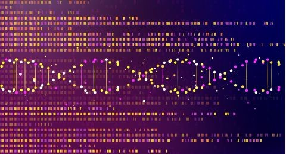

Tech Trends 2023
- Datafication
- Digital Trust
- Genomics
Datafication
Datafication is about taking a process or activity that was previously invisible and turning it into data. The data can then be tracked, monitored, and optimized, leading to new opportunities and new challenges.
Digital Trust
Digital Trust is individuals’ expectation that digital technologies and services and the organizations providing them will protect all stakeholders’ interests and uphold societal expectations and values.

Genomics
Genomics is technologies that analyze genes of a person and change or manipulate the genes information
Tech Trends 2022
- Virtual Reality
- Artificial Intelligence
- Internet of Things
- 5th generation mobile network
Trend of Interest
A trend that interest me is VR
VR is the use of computer modeling and simulation that enables a person to interact with an artificial three-dimensional visual or other sensory environment. VR is for entertainment, education, and business. VR is being used in Military, Sport, mental health, medical training, education, and fashion.

VR Game

Hurdles
Virtual Reality
Some of the limitations for virtual reality are cost of VR devices, size of VR software, locomotion sickness, the weight of VR devices, lack of the vision of the surroundings, potential addiction, graphical limits, potential eye damage and vergence conflict, and lack of understanding
Artifical Intelligence
A big disadvantage of AI is that it cannot learn to think outside of the box. AI is capable of learning over time with pre-fed data and past experiences, but cannot be creative in its approach.

Internet of Things
A drawback of IoT is hackers may gain access to the system and steal personal information.

Read More
From what I have read on websites virtual reality is still successful in 2022. Markets of virtual reality are expected to grow to nearly $600 billion by 2025. Jim Ryan, president, and CEO of Sony Interactive Entertainment, said during a presentation at CES that the Sony PlayStation VR2.